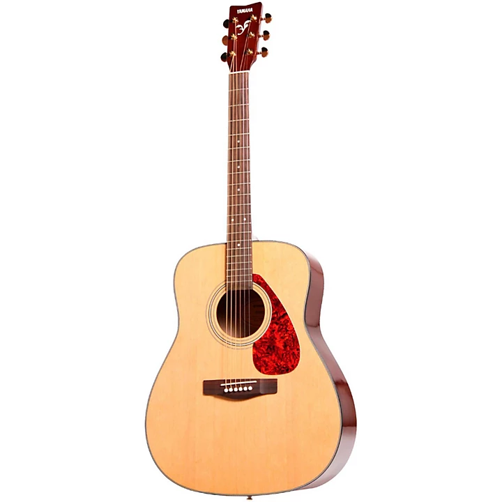
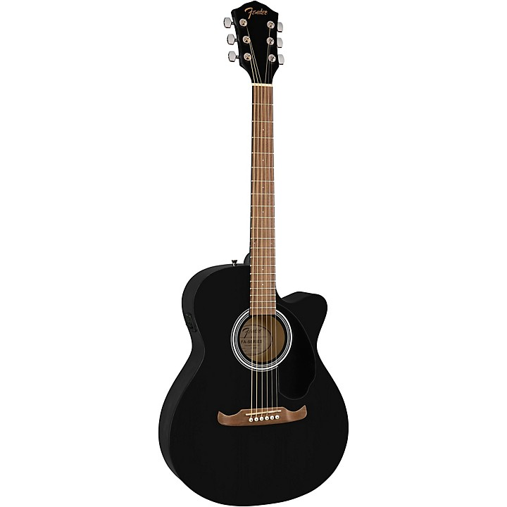
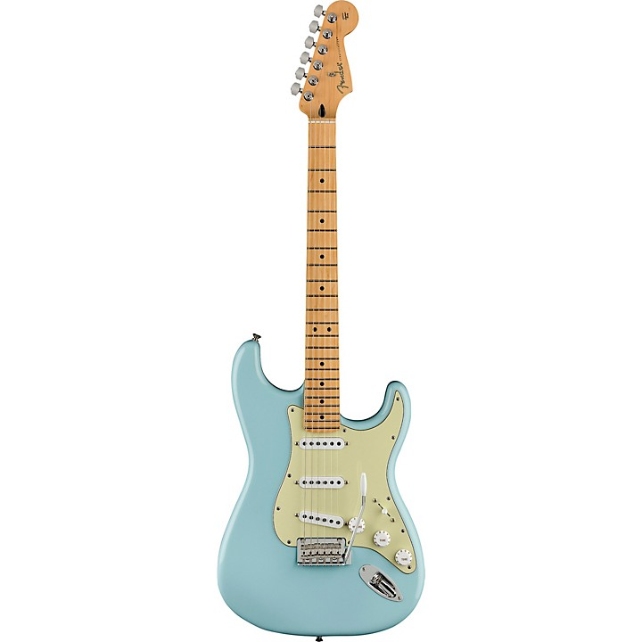
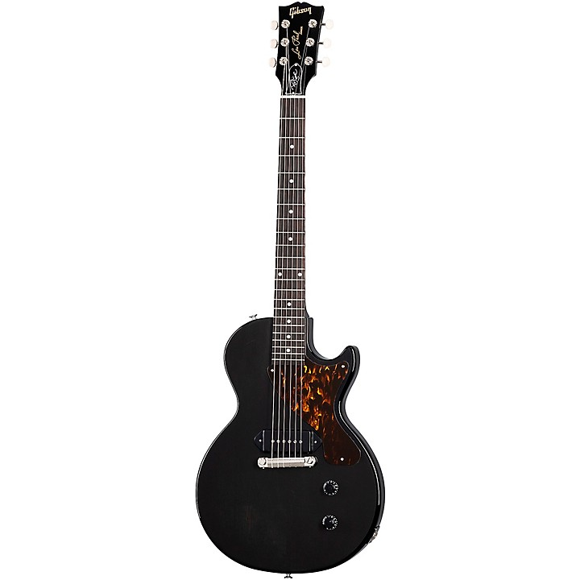

Yamaha C Series C40 (149$)

Beginners and young learners alike will appreciate the level of quality found in the Yamaha C40 Classical Guitar. This instrument delivers outstanding cost performance with remarkable playability and tone. The C series are full-size instruments with a level of quality only Yamaha can deliver. Case sold separately.
Yamaha C Series C40II (159$)

The Perfect Starter Guitar
A high level of craftsmanship and great attention to detail results in instruments of outstanding quality. C Series guitars provide excellent performance for beginners and young learners with exceptional playability and superb tone.
Taylor Academy 12e-N (899$)

The Taylor Academy 12e-N Grand Concert left-handed 12-string acoustic-electric guitar delivers the rich, classic sounds of a nylon-string instrument at an accessible price. The light string tension of nylon is easier on one’s fingertips than steel strings, making it a great choice for kids or players not yet used to pressing down on metal wire. The Academy 12e-N is also a high-quality option for players interested in exploring the distinct acoustic palette of a nylon-string, with a compact body size for extra playing comfort.
The Academy 12e-N is easy to strum and fret, yielding a rewarding sound even in the hands of a newer player. It has a solid lutz spruce top with layered sapele back and sides, and genuine African ebony for the fingerboard and bridge. It also features a simplified armrest for increased comfort. Amplify your sound with Taylor ES-B electronics, which incorporate piezo design elements from the flagship ES2 system. Powered by a 9V battery, its onboard preamp includes a built-in digital chromatic tuner, an LED display for tuning and low battery indication, and a tone-sculpting 3-band EQ. Comes with a deluxe Taylor gig bag.
Akustik Gitarlar
Yamaha F335 (159$)

Yamaha's F335 gives you that classic dreadnought shape and sound at a price that won't break your bank. The F335's tonewood combination includes a laminate spruce top, rosewood fingerboard and bridge, and meranti back and sides. Gold die-cast tuners provide smooth and accurate tuning while a tortoise-pattern pickguard gives a bit more style.
Choose between Black, Natural or Tobacco Brown Sunburst.
Fender FA-135CE (249$)

The Fender FA-135CE Concert acoustic-electric guitar is built on the concert-style platform for a sleek, modern design. The laminated spruce top features X-bracing for bright, punchy tone, ideal for lead guitar. The neck is nato, and the back and sides are laminated basswood—both tonewoods known for letting the mid and high frequencies sing out.
Thanks to the basswood back and sides, the Fender FA-135CE is very light, avoiding strain to your neck or back during prolonged playing. The chrome tuners offer precision tuning. The guitar also comes with an impressive electronics system, featuring the Fishman ION-T preamp and built-in chromatic tuner, which provides lightning-fast tuning and amplification. The preamp features a volume dial, phase and contour buttons, and a tuner power button.
Taylor 414ce V-Class (2.899$)

A truly special "Special Edition" instrument, this 414ce V-Class Grand Auditorium acoustic-electric features many custom elements artfully incorporated by Taylor Guitars' Master Guitar Designer, Andy Powers. Along with Taylor's innovative V-Class bracing, together, these features deliver much more than the sum of their parts. For everyone from pros to hobbyists, they make the playing experience more expressive, inspiring and fun. The volume, the sustain, the "in-tune-ness" of the instrument and its high-fidelity sonic detail combine to deliver a new level of player experience. Indian rosewood is one of the most popular and musically expressive tonewoods in the world, and paired with Sitka spruce produces a rich and detailed sound. Taylor's Grand Auditorium shape and rosewood's balanced, broad sonic range and complexity—and of course Taylor's renown playability—result in a guitar that will be a joy to play in a variety of scenarios for a lifetime.
The 414ce V-Class Special Edition Grand Auditorium instrument ships in a deluxe hardshell case made by Taylor for optimal fit and protection.
Elektro Gitarlar
Ibanez GRGR120EX (229$)

Ibanez builds guitars for all levels of players—from beginners to the most demanding masters of the instrument. Regardless of price, Ibanez always strives to offer the absolute best sound, style and playability in its class. It’s this mindset that has earned the Gio its place as the one of the most popular start-up guitars of all time, responsible for launching numerous musical careers around the world.
The GRGR120EX features poplar body with binding. A maple neck combined with a treated New Zealand pine fretboard, reversed headstock, sharktooth inlay and Jumbo frets allows aggressive power chording and smooth, fast playing. Electronics include two Infinity R pickups with a 3-way selector switch for a variety of tonal options, right at your fingertips.
Fender Player Tex-Mex Stratocaster (899$)

The limited-edition Fender Player Tex-Mex Stratocaster features a classic sound—bell-like high end, punchy mids and robust low end, combined with crystal-clear articulation. It's ready to serve your musical vision, it’s versatile enough to handle any style of music and it’s the perfect platform for creating your own sound. The power trio of Tex-Mex single-coil pickups are crisp and articulate, giving you that authentic Fender tone with a modern edge. The modern C-shaped maple neck's comfortable contours and smooth finish are ideal for almost any playing style. The updated two-point tremolo design has smoother travel for enhanced playing feel while simultaneously giving you rock-solid tuning stability since there’s less friction against the posts. Other features include master volume and tone controls, a five-way pickup switch, three-ply pickguard, synthetic bone nut, dual-wing string tree, sealed tuning machines and four-bolt "F"-stamped neck plate that marks this instrument as the real deal—as Fender as it gets. Own your tone and create something new with the Player Stratocaster.
Gibson Billie Joe Armstrong Les Paul Junior (2.199$)

The Billie Joe Armstrong Les Paul Junior is an exceptional guitar to rock out on, whether you play rock or punk. Designed in collaboration with Green Day’s legendary guitarist, it has everything you need for great tone with no frills to get in your way, including a mahogany neck with a Billie Joe Armstrong SlimTaper profile, rosewood fretboard, Graph Tech nut and Billie Joe’s signature on the truss rod cover. The mahogany body is equipped with a wraparound bridge/tailpiece and a P-90 DC Dogear pickup. Featuring a modernized version of the Sidewinder dual-coil technology that was first developed by Seth Lover in 1958, the P-90 DC combines hum-free performance with the most authentic P-90 tonality yet.